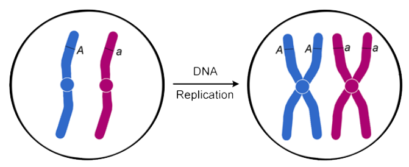
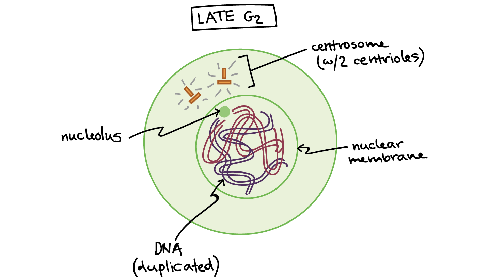

🌼 Interphase 🌼
Interphase, also known as replication, is the first phase of the cell cycle.
About 80% of a cell's lifespan is spent in this stage to replicate organelles for duplication.
Because this phase is so long, it is separated into 3 stages known as G1 Phase , S Phase, and G2 Phase.
G1 Phase
This is the first stage of Interphase. The cell makes a variety of proteins that are needed for DNA replication. The cell will only enter the next stage if there are sufficient growth factor signals telling the cell to progress.

S Phase
Also known as snythesis, this is the second stage of Interphase. DNA in the cell is packaged into chromosomes which is then replicated. As a result of replication, each chromosome now has two sister chromatids!
G2 Phase
This is the last stage of Interphase. The cell checks to make sure that DNA replication has been successfuly completed and if not, it will make any repairs needed. This cell also performs enzyme and protein synthesis as well as produce large amounts of ATP. This phase is the cell's final chance for the cell to grow before it splits!
